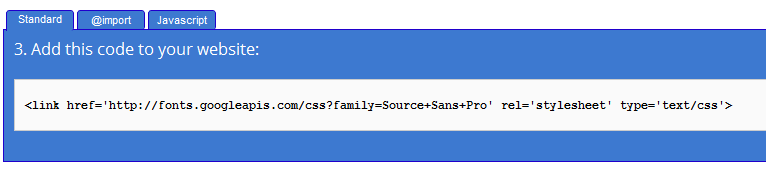

Styling Options
You can change the whole color palette used. Modify main.css and bootstrap.css to create you own palette.
Theme Color Palette
- #1f1f1f (Background Color)
- #3d3d3d (Dash-unit and half-unit Section)
- #262626 (Footer)
- #fa1d2d (Red - Used in selectors, parragraphs, bars and other)
- #b2c831 (Green - Used in titles, badges, bars and other)
- #bdbdbd & #fff (Font colors)
Google fonts
Blocks uses Open Sans font and Raleway in all the theme. If you want to change this value, you have to replace all the references in the main.css file and in the html pages.
In Google Fonts website you can find the code to paste in the theme. Choose the desired font, click in the "Quick Use" link and copy & paste the code.
